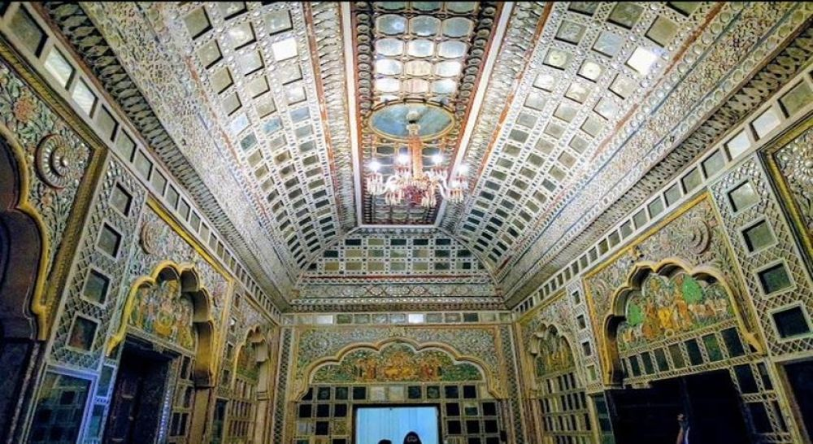

Land of golden sands, royal heritage, and vibrant colors
RAJASTHAN is a land of vibrant culture, timeless beauty, and rich heritage. Known for its colorful
festivals, intricate handicrafts, and warm hospitality, it’s a place where ancient traditions blend
with natural splendor. The vast deserts, stunning sunsets, and rolling sand dunes capture a unique
sense of romance and adventure. Rajasthan’s artisans create renowned textiles, jewelry, and pottery,
while folk music and dance infuse life into the air. It’s a region that celebrates diversity in its
landscape, culture, and people, embodying the spirit of India in every aspect.
Cities
Rajasthan's cities: timeless beauty carved in stone and sand
Jaipur
The largest and most populated city in Rajasthan, and a UNESCO World Heritage Site with historic
palaces, forts, and temples. Hawa Mahal is a top tourist attraction in Jaipur
Udaipur
A city of ancient palaces, lakes, and temples, and home to Lake Palace, a top tourist attraction
Jodhpur
A popular tourist destination with palaces, lakes, and Mehrangarh Fort, a top tourist attraction
Ajmer
Home to the Ajmer Sharif Dargah, a significant religious monument and tomb of the Sufi saint,
Moinuddin Chisthi
Forts and Mahals of Rajasthan
Amber Fort
Amber Fort, located near Jaipur in Rajasthan, is a stunning example of Rajput and Mughal
architecture. Built in 1592 by Raja Man Singh I, the fort is constructed with red sandstone and
marble, showcasing intricate carvings, frescoes, and mirror work. Overlooking the serene Maota
Lake, it offers breathtaking views of the surrounding hills. Recognized as a UNESCO World
Heritage Site, Amber Fort is a testament to Rajasthan's royal heritage and remains a major draw
for tourists.
4.6
Mehrangarh Fort
Mehrangarh Fort, located in Jodhpur, Rajasthan, is one of India’s largest and most majestic
forts. Built in 1459 by Rao Jodha, the fort stands atop a 400-foot hill, offering
panoramic views of the "Blue City" Constructed with imposing walls and intricate architecture.
The fort’s museum showcases royal artifacts, including weapons, costumes, and paintings,
providing a glimpse into Rajasthan’s rich history. Mehrangarh is also famous for its seven
gates, each marking historic victories. A popular tourist destination, the fort’s
grandeur and cultural significance make it a symbol of Jodhpur’s royal heritage.
4.5
Jaisalmer Fort
Jaisalmer Fort, also known as Sonar Quila or the Golden Fort, is a majestic fort
located in the heart of the Thar Desert in Rajasthan, India. Built in 1156 AD by Rawal
Jaisal, it is one of the largest fully preserved fortified cities in the world and a
UNESCO World Heritage Site.
The fort is made of yellow sandstone, giving it a golden hue, especially at sunrise and sunset.
Its walls blend seamlessly with the surrounding desert landscape.
Jaisalmer Fort is a symbol of Rajasthan's rich heritage and a must-visit destination for history
enthusiasts and culture lovers.
4.5
Chittorgarh Fort
Chittorgarh Fort, one of the largest forts in India, is a UNESCO World Heritage Site and a
symbol of Rajput valor and sacrifice. Located in Chittorgarh, Rajasthan, it was built in the 7th
century by Mauryan rulers and later served as the capital of Mewar. Spread over 700 acres atop a
hill. Renowned for its architectural brilliance and historical tales of bravery, including the
legendary story of Rani Padmini and her act of Jauhar, the fort attracts tourists and history
enthusiasts from around the world.
4.5
Hawa Mahal
Hawa Mahal, located in Jaipur, Rajasthan, is an iconic five-story palace built in 1799 by Maharaja
Sawai Pratap Singh. Crafted from pink and red sandstone, it features 953 intricately designed small
windows, or jharokhas, allowing cool breezes to flow through, which gave the palace its name.
Designed in the shape of Lord Krishna’s crown, Hawa Mahal was built for royal women to observe
street festivals and daily life while maintaining their privacy. A fine example of Rajput
architecture with Mughal influences, it offers stunning views of the city and the Jantar Mantar from
its top floors.
4.5
Jal Mahal
Jal Mahal, meaning "Water Palace," is a stunning architectural marvel situated in the middle of
Man Sagar Lake in Jaipur, Rajasthan. Built in the 18th century by Maharaja Madho Singh I as a
leisure retreat and hunting lodge, the palace is an exquisite blend of Rajput and Mughal styles.
Constructed using sandstone, its unique design appears to float on the lake, with four submerged
levels and only the top story visible above water. Surrounded by the Aravalli Hills, Jal Mahal
offers breathtaking views, especially at sunset. Though entry into the palace is restricted,
visitors can enjoy its beauty from the lakeside or take boat rides for a closer view.
4.0

Sheesh Mahal
Sheesh Mahal, located within Amber Fort in Rajasthan, is a breathtaking example of intricate
artistry and opulence. Built by Raja Jai Singh in the 16th century, the palace is adorned with
thousands of small, handcrafted mirrors and glasswork on its walls and ceilings. Designed to reflect
even the smallest light source, the Sheesh Mahal creates a dazzling, illuminated effect that
mesmerizes visitors. Originally used as a private chamber for the royal family, its beauty
symbolizes the grandeur of Rajput architecture. A visit to Sheesh Mahal is a highlight of exploring
Amber Fort, offering a glimpse into the luxurious lifestyle of Rajasthan’s royalty.
4.5
A Perfect Itinenary To Rajasthan
Day 1:Your arrival in Jaipur, Rajasthan
So when you book your train/ flight for Jaipur arrival, the best time would be from 6 am to 12 noon, as
by then you can rest for 1-2 hour and still explore some amazing places in Jaipur like:
Hawa Mahal, City Palace, Shri Govind Dev ji Temple, Jantar Mantar, Birla temple, and if you are not
tired then also visit Chokhi Dhani tourist village after 7 pm.
You can visit all these places from 2-3 pm to 9-11 pm, and then rest for the night in your booked hotel
in Jaipur
Day 2: A whole full day in Jaipur to enjoy
So now you have explored, what we call the PINK CITY PART of Jaipur on day 1, and now on day 2, you will
visit the AMER region of Jaipur. You will start your Jaipur sightseeing tour with trip to:
AMBER FORT & PALACE, which is still the number 1 tourist place as per daily numbers, and you should give
a minimum of 1-2 hour for this massive fort.
Plus you can also enjoy a ELEPHANT RIDE from gate 1 till the 1st courtyard area, from where you can buy
your entry tickets.
Then inside the Fort, you will see many palaces, especially SHEESH MAHAL, which is a palace completely
made of glass
Then after spending 2 hours at Amber Fort, you will leave for JAL MAHAL (a palace inside the Man Sagar
Lake), JAIGARH FORT (a military fort & has India’s biggest cannon), NAHARGARH FORT & its Wax Museum
(which also has a beautiful replica of Sheesh Mahal), and GATORE KI CHHATRIYAN, the resting place of
Jaipur royal family and has very beautiful architecture (awesome place for serious photographers).
You will easily visit these places till 5 pm, and then you can either explore markets of Amer & Pink
city or visit a few more tourist sites like ALBERT HALL MUSEUM which has an original Egyptian Mummy,
SISODIA RANI BAGH, GALTA MONEY TEMPLE etc. And by night rest at your Jaipur hotel
DAY 3: Goodbye Jaipur, & explore Chittorgarh
After exploring Jaipur for 2 days, you will leave for Udaipur, which is a 7 hour drive, but you will
reach in 10 hours, as you will be visiting the famous & UNESCO world heritage site of CHITTOR FORT in
Chittorgarh (300 km from Jaipur & 100 km before Udaipur).
So if you leave from Jaipur by 9-10 am, you will reach Chittorgarh by 1-2 pm, and after lunch explore
the Chittor Fort, which will take 1-2 hour.
We suggest to hire a local guide from the ticket counter as there is so much to see & admire inside this
huge castle, such as 19 temples, 20 artificial pounds (water bodies), palaces and Vijaya Stambha (a
beautiful tower built after the victory on Mahmud Shah I Khalji in 15th century).
By evening, you will reach Udaipur and rest for the night
DAY 4: A whole day in Udaipur
Udaipur, also know as the city of Lakes, is an amazing destination, also a favorite place for destination
wedding. On day 4, you will be in Udaipur & exploring the city from morning to night, visiting amazing
places like:
CITY PALACE, JAGDISH TEMPLE, SAHELIYON KI BARI, JAGMANDIR, BAGORE HAVLI, LAKE PALACE, LAKE PICHOLA BOAT
RIDE, and if you are not tired then you can explore the local markets of Udaipur. Night stay in Udaipur.
Please note: The Lake Palace of Udaipur is a 5 star hotel and to explore it, some guests plan a night
stay here or book a table at their restaurant.
DAY 5: Visit Shrinathji temple in Nathdwara & reach Jodhpur by night
So after exploring Udaipur, you will leave for Jodhpur which is a 4 hour drive and you will visit many
on-route place here. Out of them the most famous one is Shrinathji temple in Nathdwara.
Shrinathji temple is dedicated to Lord Krishna, and followers from all over the globe visits this
temple, even Indian prime ministers.
Along with Shrinathji temple, you will also visit Haldighati Museum, Ekling ji temple, Badi Lake and
reach Jodhpur by late evening, and rest at your booked Johdpur hotel.
DAY 6: Explore Jodhpur today
Today on day 6, you have the more than 12 hours to explore Jodhpur and we will start with a trip to
Mehrangarh Fort, which is the main attractions of Jodhpur city. This fort is maintained by the royal
family of Jodhpur so be ready to see a huge castle which can be converted into a 7 star hotel any day.
Then after exploring Mehrangarh Fort, you will visit Jaswant Thada, which is just 5 minute drive from
Fort, and this place is called as Taj Mahal of Jodhpur, as its made up of pure white stone, and
cenotaphs here are simply stunning. This is a memorial of Jodhpur Monarchy from 13th century.
After your lunch, which we suggest to try Gypsy restaurant Thali, and later you will visit Umaid Bhawan
Palace, which is 1/3rd museum and 2/3rd a Taj Heritage Luxury Hotel. In the museum you will also see a
collection of vintage cars.
And in evening you can visit Mandore Garden, explore local markets of Jodhpur (very famous for wooden &
brass work) at Clock Tower area, and rest for the night at your Jodhpur Hotel.
DAY 7: Explore Jaisalmer city and a few sites in the desert
Today you will leave for Jaisalmer city after your breakfast at the camp, but before than we will take
you to Amar Sagar Jain Temple, which is very beautiful place to visit in desert and Kuldhara Haunted
Village which is said to be the most haunted place to visit in India.
Then by noon you will reach Jaisalmer City and explore Jaisalmer Sonar Quila (Jaisalmer Golden Fort).
Here you will see Patwon ki Haveli, a 500 year old mansion and a stunning one, along with Nathmal ki
Haveli, Salim Singh ki Haveli, Cannon point and you can also visit the markets of the fort.
The later by evening you will visit Gadisar Lake, Bada Bagh, Vyas Chhatri & also checkout the Bhang Shop
of Jaisalmer, & NK Sharma Puppet show, and rest for the night at Jaisalmer city booked hotel.